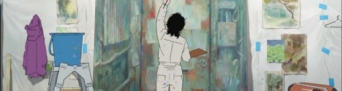
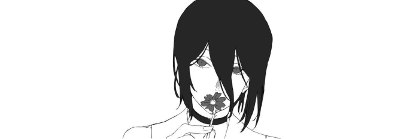
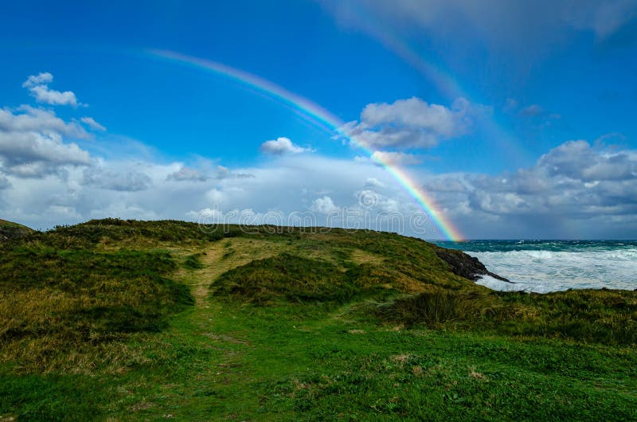

28/04/2026 - 20:49 | by @iyannke

amizades
eu nunca fui uma pessoa de ter muitas amizades, principalmente na minha infancia aonde eu passava o dia sozinha vendo videos ou brincando, com 4/5 anos meu irmão me apresentou o computador e a internet, eu via videos e passava meus dias jogando por horas e horas no computador dele, ao passar do tempo eu descobri que existia pessoas reais jogando comigo, comecei a interagir e aos poucos eu fui me enfiando mais nesse buraco até o ponto de que meus amigos são a maioria virtuais, claro que tem aqueles que são da minha escola só que tipo, tem apenas 2 pessoas que eu acredito ser meus amigos. Com isso, o tempo passou, conheci novas pessoas, perdi outras, até que hoje em dia eu tenho pessoas maravilhosas no meu cotidiano que me fazem rir e me fazem me sentir acolhida, a nauta é uma das pessoas mais queridas que eu tenho, uma pessoa que eu posso confiar e em que eu faria de tudo pra não afastar nunca!!!
24/04/2026 - 18:46 | by @iyannke

oi eu ser yannke 😺
vou contar um pouco sobre mim pq todo mundo fez isso e eu ainda nao fiz
eu sou a yannke, tenho 13 anos, vou fazer 14 no dia 26/06 desse ano e eu vivi boa parte da minha vida na internet, já fiz umas merdas que me arrependo e tento ser o mais legal possivel ultimamente, minha comida favorita é lasanha e minhas cores favoritas sao roxo, azul e rosa, eu me cobro muito por coisas simples e eu sei fazer muitas coisas, como croche, já progamei um site sobre a spg ( que nao acabei ate hoje), desenho e etc. Eu amo arte e cresci fazendo ela, meu sonho foi fazer uma faculdade de artes, ainda penso nisso porém como um plano B, hoje em dia eu namoro uma pessoa maravilhosa que sempre me apoia e eu acho que é a primeira vez que eu to feliz em um relacionamento, normalmente eu passo meus dias trancada no meu quarto o que não é um problema pra mim já que, apesar de eu não ser diagnosticada oficialmente com ansiedade social eu tenho sinais e sempre sofri desde pequena isso, também tenho uma suspeita de depressão nao vou sair falando que é verdade, só tenho sinais né. um pouco sobre mim ai
:P
23/04/2026 - 20:01 | by @vdz_1

oioi galera, voltei aqui hoje denovo. to sem ideia alguma do que escrever então vou falar qualquer merda, quero primeiro falar que eu fiquei mmuito feliz aquela epoca quando tava todo mundo vendo meus videos e mandando mensagens positivas, agradeço todo mundo que viu os videos e até quem nao gostou, obrigado mesmo. quero dizer que eu vou voltar com os videos começo do mes que vem/final desse mês, acho que vcs vao gostar então peço que vejam quando eu postar.
eu também to fazendo uns projetinhos de musica que vou ta lançando agora final desse mês então quem quiser ouvir quando lançar eu agraceceria muito, eu to gostando demais de fazer essas musiquinhas e espero melhorar cada vez mais.
por ultimo quero dizer que amo todos vocês que conversaram comigo ou até quem nem conversou, obrigado por estarem aí, mesmo sem eu falar tanto com vocês eu me sinto acolhido por esse pessoal foda q vcs são. obrigado quem leu, até outro dia :)
- vdz